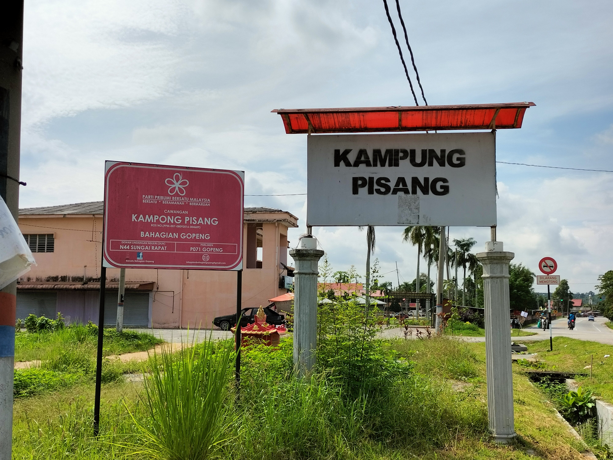
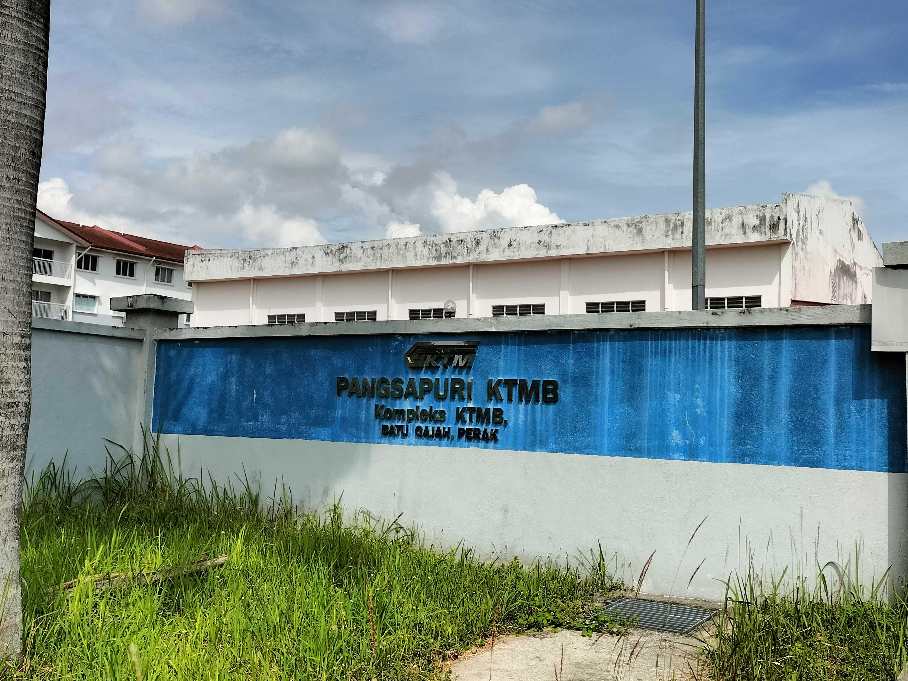
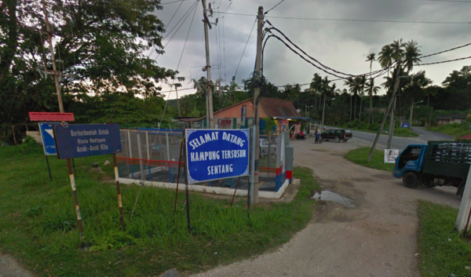

Feature
Neighbourhood Gallery
Local Community

Taman Desa Sentral
Residential area designed for modern living, offering a mix of housing options & green spaces. Fosters a sense of community among residents

Kampung Pisang
A village that maintain its traditional charm & reflects the cultural heritage of Pekan Batu Gajah

Pangsapuri KTM
An apartment complex that offers residents convenient & modern urban living. A strategic location that provides easy access to public transportation.

Kampung Tersusun Sentang
A distinctive village that embodies the charm of traditional Malaysian rural life. The resident often engage in agricultural activities and contributing to traditional customs & local crafts